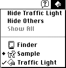
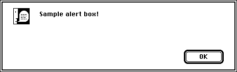

About the Notification Manager
The Notification Manager provides a notification service. It allows software running in the background (or otherwise unseen by the user) to communicate information to the user. For example, applications that manage lengthy background tasks (such as printing many documents or transferring large amounts of data to other machines) might need to inform the user that the operation is complete. These applications cannot use the standard methods of communicating with the user, such as alert or dialog boxes, because such windows might easily be obscured by the windows of other applications. Moreover, even if those windows are visible, the background application cannot be certain that the user is aware of the change. A more reliable method is needed to manage the communication between a background application and the user, who might be awaiting the completion of the background task while running some other application in the foreground.In the same way, relatively invisible operations such as Time Manager tasks, VBL tasks, or device drivers might need to inform the user that some previously started routine is complete or perhaps that some error has rendered further execution undesirable or impossible.
In all these cases, the communication generally needs to occur in one direction only, from the background application (or task, or driver) to the user. The Notification Manager, included in system software versions 6.0 and later, allows you to alert the user by posting a notification, which is an audible or visible indication that your application (or other piece of software) requires the user's attention. You post a notification by issuing a notification request to the Notification Manager, which places your request in a queue. When your request reaches the top of the queue, the Notification Manager posts a notification to the user.
You can request three types of notification:
These types of notification are not mutually exclusive; for example, an application can request both audible and alert notifications. Moreover, if the requesting software is listed in the Application menu (and hence represents a process that is loaded into memory), you can instruct the Notification Manager to place a diamond-shaped mark next to the name of the requesting process. The mark is usually intended to prompt the user to switch the marked application into the foreground. Finally, you can request that the Notification Manager execute a notification response procedure, which is executed as the final step in a notification.
- Polite notification. A small icon blinks, by periodically alternating with the Apple menu icon (the Apple logo) or the Application menu icon in the menu bar.
- Audible notification. The Sound Manager plays the system alert sound or a sound contained in an
'snd 'resource.- Alert notification. An alert box containing a short message appears on the screen. The user must dismiss the alert box (by clicking the OK button) before foreground processing can continue.
In short, a notification consists of one or more of five possible actions. If you request more than one action, they occur in the following order:
Figure 5-1 A notification in the Application menu
- A diamond-shaped mark appears next to the name of your application in the Application menu, as illustrated in Figure 5-1. Note that the diamond is present only when your application is in the background (because the diamond is replaced by a checkmark if your application is the active application). In Figure 5-1, the Traffic Light application is the active application.

Figure 5-2 A notification alert box
- A small icon blinks, alternating with either the Apple menu icon or the Application menu icon in the menu bar. Typically, the small icon is your application's small icon. Because several applications can post notifications, there might be a series of small icons blinking in the menu bar. The location of each blinking icon varies according to the posting application's mark (if any). If your application is marked with a diamond (or a checkmark) in the Application menu, the icon blinks above the Application menu; otherwise, the icon blinks above the Apple menu.
- The Sound Manager plays a sound. Your application can supply its own sound (by passing the Notification Manager a handle to an
'snd 'resource loaded into memory) or request that the Sound Manager use the user's system alert sound.- An alert box like the one in Figure 5-2 appears, and the user dismisses it. Your application specifies the text in the alert box.

The mark in the Application menu and the blinking small icon remain until the requesting application removes the notification request from the queue. However, the sound and the alert box are presented only once, if at all.
- A response procedure is executed. You can use the response procedure to remove the notification request from the queue or perform other processing.
Any applications, desk accessories, tasks, routines, or drivers can use the Notification Manager, whether they are running in the background or not. It is especially useful for background applications, such as the PrintMonitor application. (The system alarm, which is called by the Alarm Clock desk accessory, also uses the Notification Manager.) Foreground applications can, however, use the Notification Manager to achieve effects (such as the blinking small icon) that are otherwise more difficult to create. For the same reasons, the Notification Manager can be useful even to applications that might be executing in a Finder-only environment under system software version 6.0.
The Notification Manager provides applications with a standard user interface for notifying the user of significant events. The following three-level notification strategy for communicating with the user is recommended:
Ideally, the user should be allowed to set the desired level of notification. The suggested default level of notification is level 2. In levels 2 and 3, you might also play a sound, but the user should have the ability to turn the sound off. In addition, a user should have the ability to turn off background notification altogether, except when damage might occur or data might be lost.
- Display a diamond next to the name of the application in the Application menu.
- Insert a small icon into the list of icons displayed alternately with the Apple menu icon or the Application menu icon in the menu bar, and display a diamond next to the name of your application in the Application menu.
- Display a diamond, insert a small icon, and display an alert box to notify the user that something needs to be done.
Each application, desk accessory, and device driver can issue any number of notification requests. Each requested notification is presented separately to the user. For this reason, avoid posting multiple notification requests for the same occurrence. Depending on the method of notification you specify, multiple requests might result in an annoying number of notification sounds or many alert boxes that the user must dismiss before continuing.
- Note
- This suggested notification strategy may not be appropriate for your application. Notifications posted by system software might not follow these guidelines. ·
Note that the Notification Manager provides a one-way communications path from an application to the user. There is no provision for carrying information back from the user to the requesting application, although it is possible for the requesting application to determine if the notification was received. If you require this secondary communications link, do not use the Notification Manager. Instead, you should wait until the user switches your application into the foreground and then use standard means (for example, a dialog box) to obtain the required information.
© Apple Computer, Inc.
17 JUN 1996